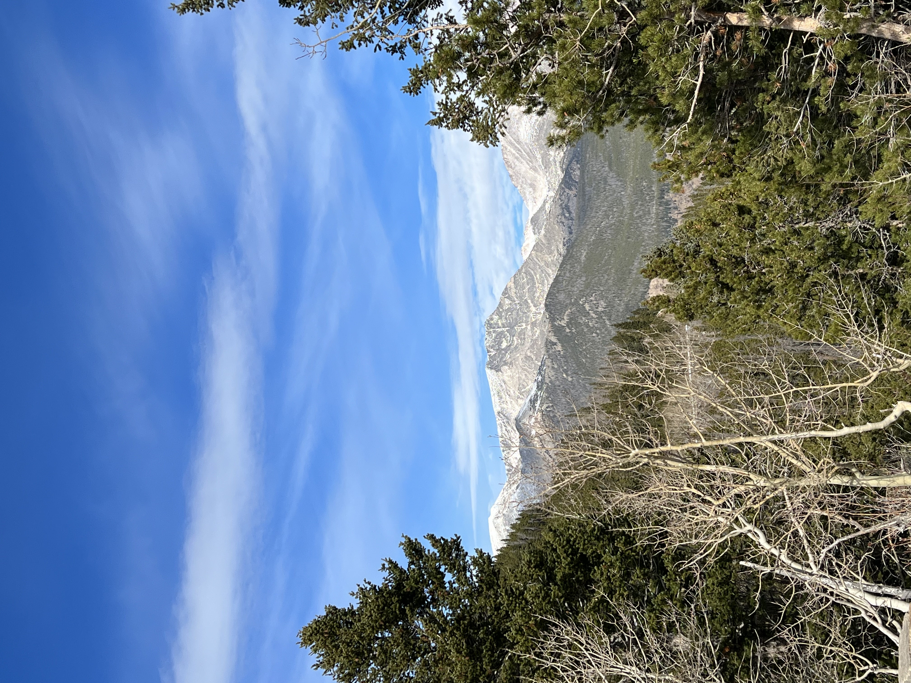
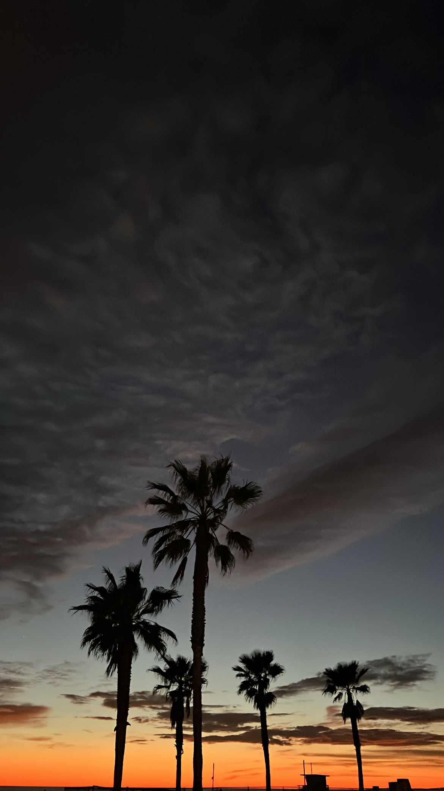
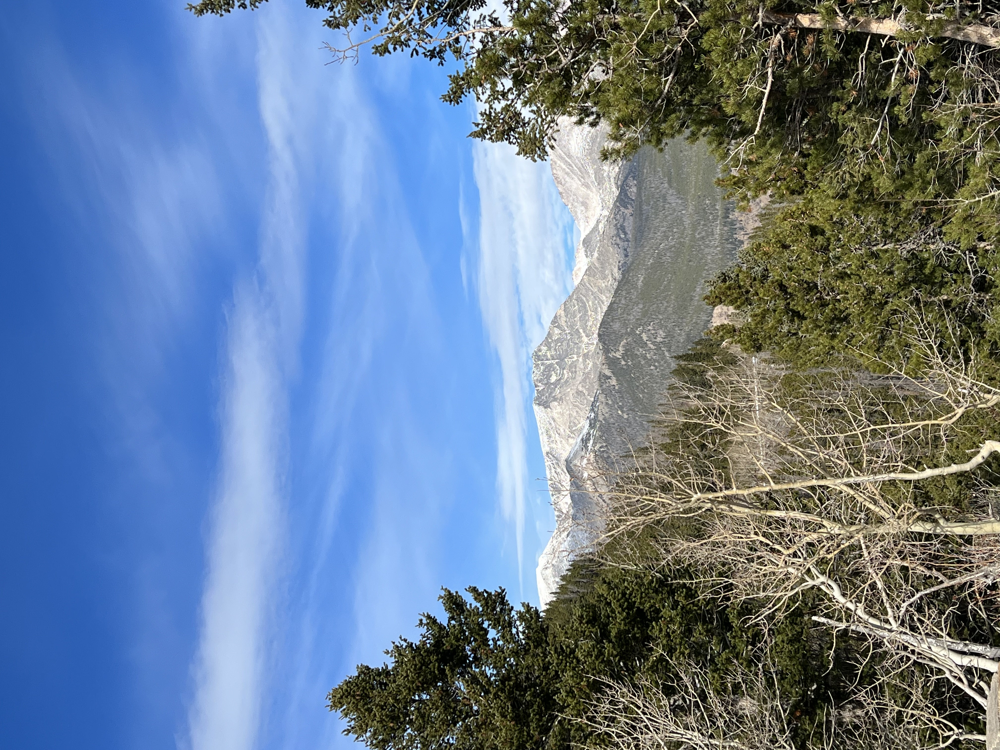
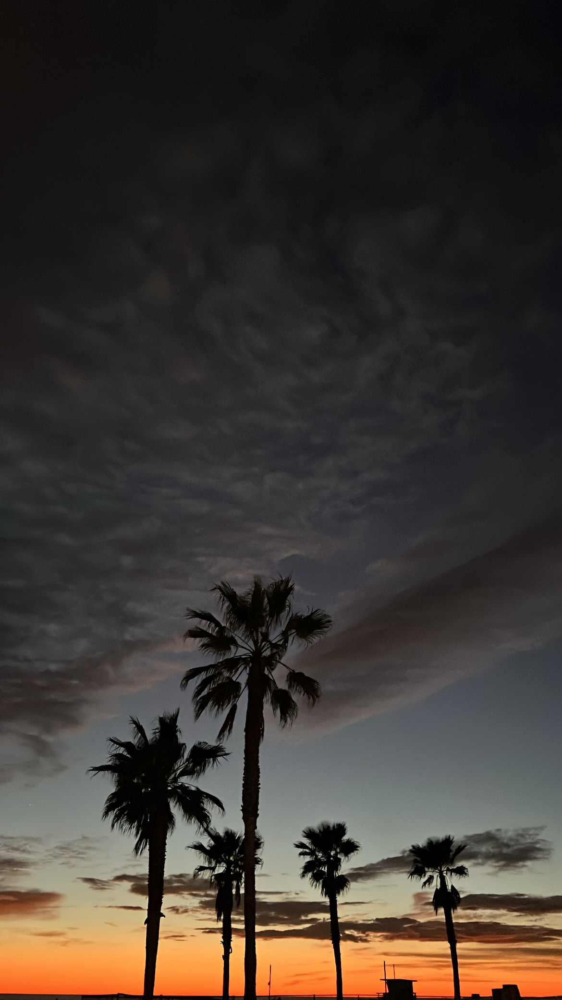

I am a non-binary 28 year old adult born & raised in the Central Valley/Bay Area in California. About 6 months ago, I took a solo road trip halfway across the country to move to Denver, Colorado. I love colors and patterns, apparel, and being outdoors! The sun makes me feel the most alive.
Interests & Hobbies:
Job Experience:
So why coding?:
As a child, I taught myself some HTML basics and used to build websites and blogs for fun. It was an excellent way to utilize my creativity. As I got older, I instead found myself immersed in the world of retail management. I've since discovered my passions lie in physically creating things and exploring all the beauty the world has to offer. My goal is to utilize the time and skills developed in this programming course to be able to redirect my life so that my days may be full of passions, mental stimulation, and creation.
This is a collection of projects created thus far since beginning my journey with Epicodus. Feel free to explore any available projects so that you may see how much I've grown.
(HTML, CSS) respository || live page
(HTML, CSS) repository || live page
(HTML, CSS) repository || live page
All projects are hosted on Git.
  
 